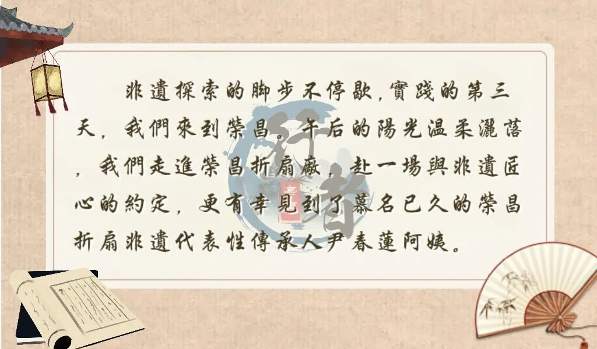
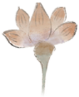
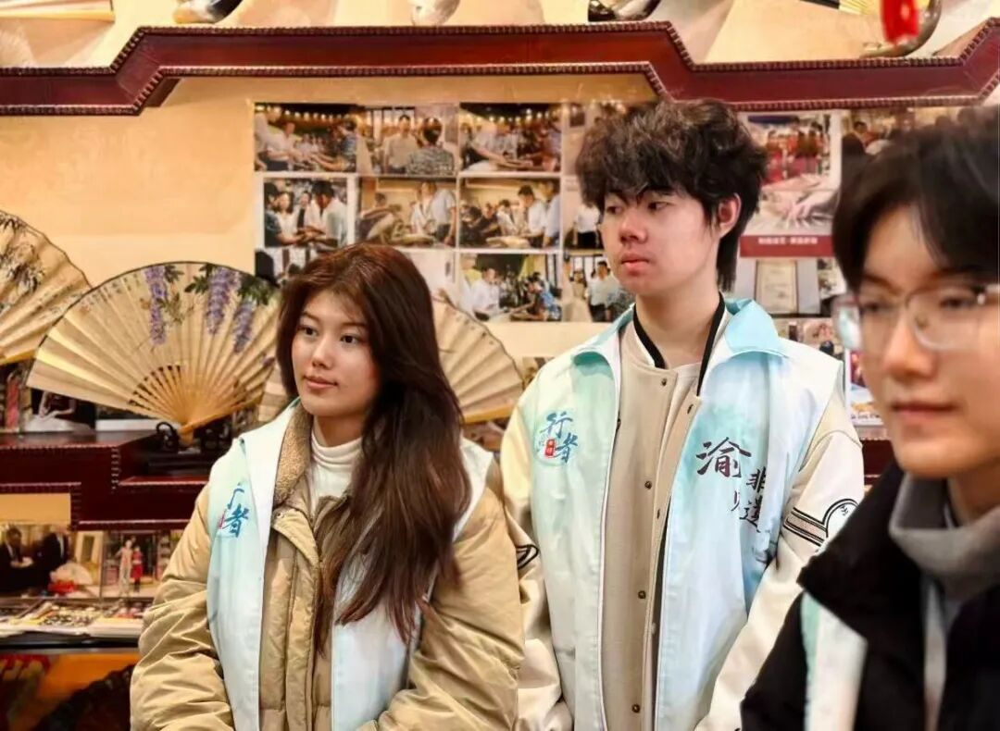

【行者无疆·渝见非遗】荣昌访扇：对话传承人，解锁指尖上的千年匠心



一踏入荣昌折扇厂，阵阵竹香便扑面而来。尹阿姨早已等候在那里，亲切的笑容瞬间拉近了我们与非遗的距离。她没有急于带我们参观，而是先为我们缓缓讲述荣昌折扇的百年历史。从明清时期荣昌折扇作为贡品的辉煌，到不同年代折扇样式、工艺的演变，尹阿姨的话语里满是对这份非遗文化的热爱。更让我们动容的，是她作为传承人的家族故事——尹家世代以制扇为业，一把折扇，承载的是几代人的坚守。她谈及祖辈们对制扇技艺的严苛追求，说起自己从小在作坊耳濡目染、拜师学艺的经历，也感慨过传承路上的不易。每一句讲述，都让我们深刻体会到，一项非遗技艺的延续，背后是无数个家庭与匠人执着的接力。
讲解过后，尹阿姨带我们来到工作区，亲自演示荣昌折扇的制作过程。“荣昌折扇以‘薄如蝉翼、亮如绢绸’著称，制作起来可不简单，要经过备料、制骨、裱糊、装饰等几十道工序，每一步都容不得半点马虎。”她一边演示，一边细致讲解。裱糊扇面时，手法娴熟利落，纸张与扇骨完美贴合，力度分毫不差。我们围在一旁，屏息观察每一个细节，惊叹于指尖匠心的精妙，也读懂了何为“以手传心”的修行。




最珍贵的环节，是尹阿姨鼓励我们亲手体验。成员们尝试了“穿扇”或“裱纸”等基础步骤，方才惊觉其中艰难。手中的篾条似乎有了自己的脾气，力道轻了穿不透，重了易折断；一刷子浆糊下去，多一分则溢，少一分则虚。笨拙的双手与精巧的器物之间，形成了最直观的对比。这短暂的体验，让我们真切感受到了技艺的繁复，更对传承人几十年如一日的专注心生敬意。


行者无疆
来源 | 行者无疆实践团
文字 | 张思羽
图片 | 行者无疆实践团
编辑 | 冯语城
审核 | 刘辰锡
责编 | 邹靓靓 周 亮